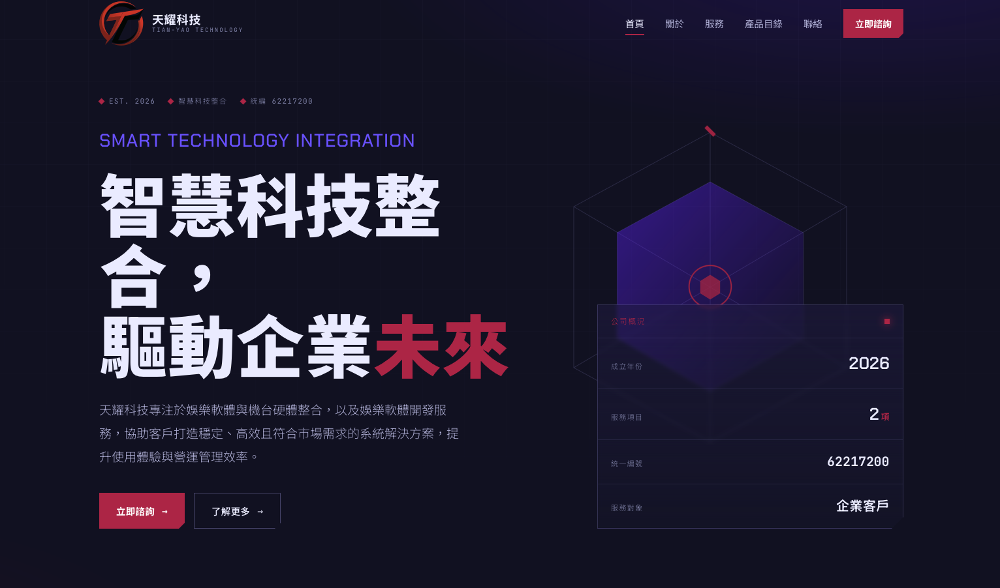
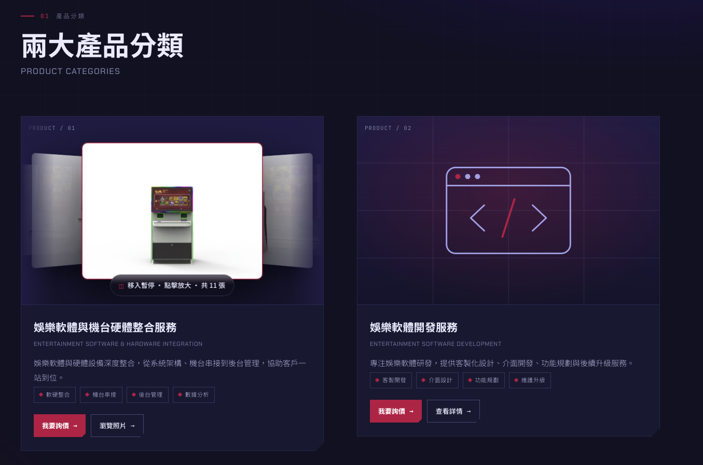
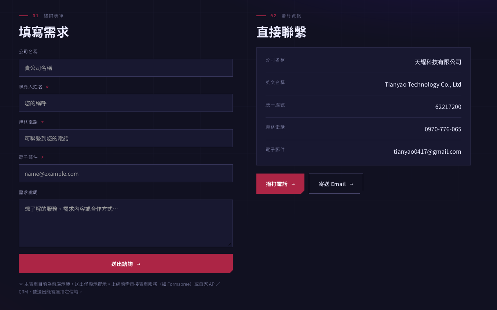

01 — 專案背景
B2B 生意，第一印象常常發生在官網
天耀科技在自己的領域有紮實的實力，但在數位門面上是空白的。B2B 客戶在合作前幾乎一定會先搜尋公司、查看官網——沒有官網，或官網不夠專業，信任感就先打了折扣。
這個專案的目標是為天耀科技建立一個「拿得出手」的企業門面：把公司是誰、能做什麼、怎麼聯繫，用清楚且專業的方式呈現給每一位查訪的潛在客戶。
專案核心：企業官網不是形象裝飾品，而是業務流程的一環——客戶查訪時它要能建立信任，客戶有意願時它要能引導洽詢。
02 — 問題與痛點
沒有專業門面的企業，在客戶眼中少了一分底氣
痛點 1潛在客戶搜尋公司名稱時找不到官方資訊，難以確認公司的專業度與規模。
痛點 2服務項目與公司優勢缺乏系統化呈現，業務開發只能靠口頭與簡報反覆說明。
痛點 3沒有明確的洽詢入口，有興趣的客戶不知道下一步該怎麼聯繫。
03 — 解法與設計思路
從企業定位出發的資訊架構與視覺識別
設計前先理解企業：天耀科技的核心能力是什麼？目標客戶是誰？客戶最在意什麼？以此規劃資訊架構——公司介紹、服務項目、合作洽詢，層次分明地引導訪客理解並行動。
視覺上建立一致的企業識別，以專業穩重的調性貫穿整站；每個區塊都有明確的下一步引導，讓瀏覽自然走向洽詢。



HTMLCSSJavaScriptRWDCorporate IdentityFrontend Design
04 — 我的負責範圍
從需求訪談到上線部署，一人全程負責
- 1與天耀科技訪談，釐清企業定位、目標客群與網站期待
- 2規劃網站資訊架構與頁面層次，決定內容呈現的優先順序
- 3設計企業視覺識別——色彩、字型、版面，建立專業一致的調性
- 4以 HTML / CSS / JavaScript 手工切版開發，輕量快速
- 5RWD 響應式設計與測試，桌機、平板、手機全面確認
- 6部署上線並交付可維護的網站結構
05 — 設計重點
讓官網真正服務業務的三個關鍵決策
設計重點專業感的細節：B2B 客戶對「專業」的判斷來自細節——排版的秩序感、資訊的層次、視覺的一致性。整站設計都圍繞著建立信任這個目標。
設計重點服務項目的可讀性：把公司能做的事整理成清楚的服務區塊，客戶不需要聽完整場簡報，瀏覽官網就能理解合作的可能性。
設計重點洽詢動線設計：每個關鍵區塊都通往明確的聯繫入口，讓「有興趣」能夠立刻變成「來洽詢」，不讓商機停在瀏覽階段。
06 — 專案成果 / 價值
官網上線後帶來的實際改變
品牌成果
官網上線後，天耀科技有了可以主動分享給客戶的官方連結。潛在客戶查訪時能快速理解公司能力與服務項目，並透過明確的洽詢入口直接聯繫——官網從無到有，成為業務開發的實質助力。
後續延伸：網站架構可直接擴充案例展示、最新消息或多語系版本，隨企業業務發展持續成長。